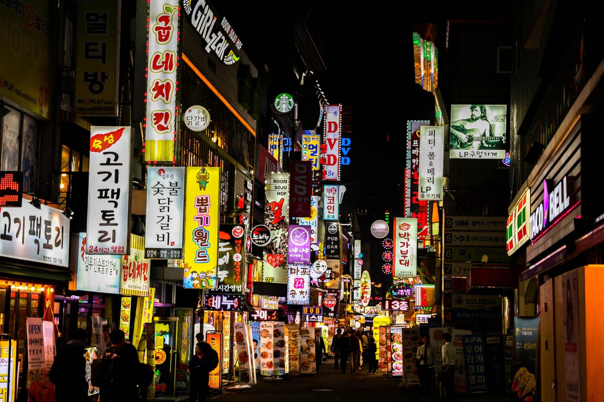
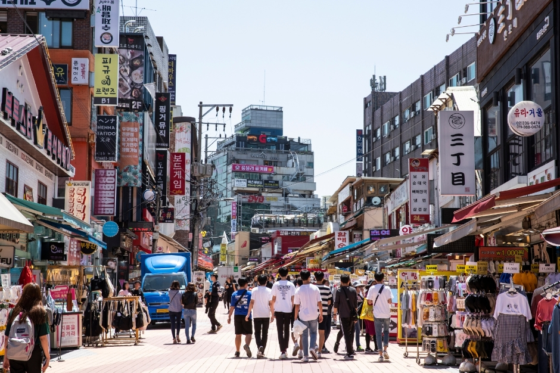
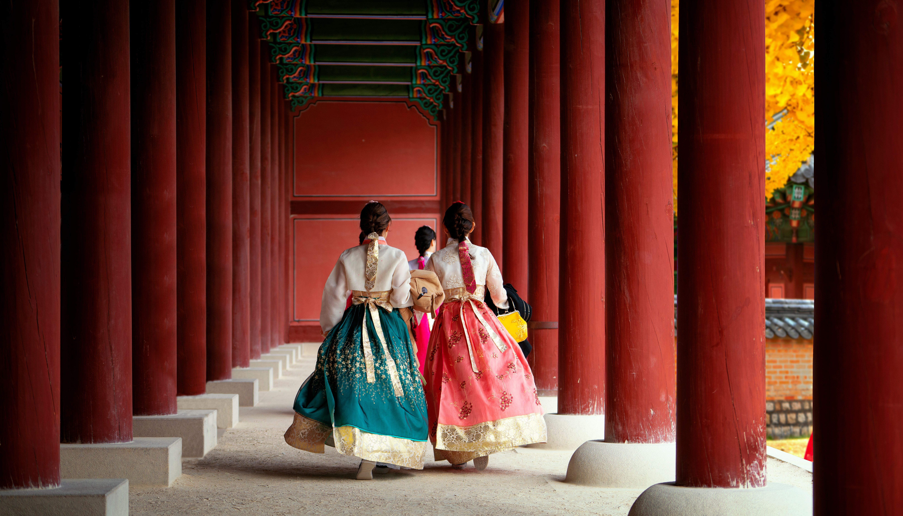

探索韓國之美
韓國是一個融合傳統文化與現代潮流的國家， 不僅保留了歷史悠久的宮殿、韓屋與傳統文化， 也擁有繁華的購物商圈、時尚的咖啡廳，以及充滿活力的城市街景。
無論是漫步在首爾充滿歷史氛圍的傳統街道、欣賞繁華的城市夜景， 還是探索熱鬧的購物商圈、品嚐道地韓式料理，都能感受首爾融合傳統與現代的獨特魅力！

韓國旅遊特色
購物天堂

走訪明洞、弘大、聖水洞與東大門，探索流行服飾、美妝與特色小店，享受購物樂趣。
傳統文化

穿著韓服漫步古宮、欣賞傳統韓屋，或體驗韓式茶道與汗蒸幕，感受韓國獨特的文化風情。